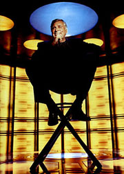
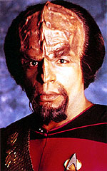
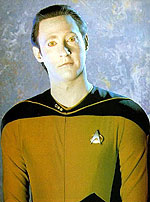
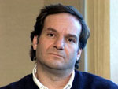
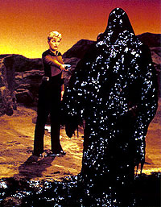
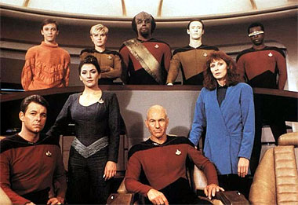

|
Captulo
3
Câmeras no século 24
Roddenberry
volta a colocar a franquia na televisão, mas será
que ele sabe como ela funciona na década de 80?
O
sculo 24 est prestes a comear. Com esta frase, o chefe de
televiso da Paramount, Mel Harris, deu incio campanha publicitria
para o lanamento de A Nova Gerao.
Simultaneamente, nos estdios da Paramount, este moto era uma
realidade. Com o conceito definido e atores escalados, a produo
do primeiro episdio indito de uma srie de Jornada nas Estrelas
em 18 anos estava prestes a comear. E, com isto, um desafio a
todos os envolvidos: produzir 26 episdios de uma srie de fico
cientfica dentro do prazo e oramento restritos de uma produo
televisiva. Mas, como a prpria definio do episdio piloto,
a jornada no seria simples.
Fairpoint
 Gene
Roddenberry e D.C. Fontana haviam, para o episdio piloto, desenvolvido
toda a trama envolvendo o mistrio da estao Farpoint. O rascunho
original de Fontana era mais voltado ao, com uma criatura
aliengena capturada por uma raa simiana conhecida como Annoi.
Os Annoi foravam a criatura a criar uma plataforma orbital em
torno de si, simultaneamente alimentado a criatura apenas o bastante
para sua sobrevivncia. Neste rascunho, duas naves da Federao,
a Enterprise e a Starseeker, iriam at o planeta, mas a Starseeker
seria destruda pelos Annoi. Este rascunho original previa um
episdio piloto com uma hora de durao.
Foi ento que a Paramount comunicou a Roddenberry o seu desejo
de que o episdio piloto, afinal, tivesse a duração
de duas horas. Sentindo-se confortvel ao voltar para o comando
de uma srie de TV, Roddenberry negou-se terminantemente a produzir
um piloto com duas horas. Enquanto este impasse perdurou, continuou-se
a trabalhar num roteiro de uma hora de durao.
Quando Gene finalmente entregou os pontos, havia pouco tempo para
se ajustar e expandir o roteiro do episdio piloto. Ele, ento,
criou uma segunda trama, que pudesse se desenrolar em paralelo
com o mistrio de Farpoint criando, no processo, Q. Algumas
outras cenas ainda foram includas, de modo a se conseguir a durao
necessria ao episdio entre elas, encontram-se as longas seqncias
de separao e juno da seo disco da nave, e a visita do Almirante
McCoy.
Com o roteiro em seus estgios finais, faltavam poucos detalhes
para as filmagens, programadas para terem incio em 01/06/1987,
apenas nove meses aps a aprovao do conceito inicial pela Paramount.
O principal, porm, dizia respeito aparncia de alguns personagens.
 Michael
Westmore, maquiador vencedor do Oscar de 1981, foi contratado
para cuidar de todos os aliengenas da srie, e um certo andride.
Para Worf, o primeiro klingon a ser visto trabalhando na ponte
de uma nave da Federao, a tarefa era simples. Eles me mostraram
uma srie de vdeos com todos os klingons mostrados nos filmes,
relembra Westmore, e o que eu pude perceber foi que no haviam
dois klingons iguais! Assim, pude criar minha prpria viso dos
klingons, a partir do que havia visto nos filmes. O desafio,
porm, era tornar o processo de maquiagem o mais curto possvel.
Westmore desenvolveu o rosto de Worf em trs peas separadas:
uma carapua que inclua a testa de tartaruga tpica dos klingons
e os cabelos, um nariz postio e dentes falsos.
 Deste
modo, o processo de maquiagem levava apenas cerca de 2 horas
e meia criando para Dorn a rotina de chegar ao set s 5 horas
da manh. Data, porm, mostrou-se um assunto mais complicado.
Roddenberry simplesmente no se decidia quanto ao que desejava
para sua aparncia. Foram necessrios 24 testes de maquiagem antes
de se chegar ao j conhecido prateado de sua pele, o que resultou
em histrias interessantes. Rick Berman relembra que teve de
conversar muito com Gene para fazê-lo desistir de a srie
ter um andride cor-de-rosa! O tom prateado de sua pele, eventualmente,
foi completado com a adio de lentes de contato amarelas.
Se a cor dos olhos de Data foi o menor dos problemas de maquiagem
para Brent Spiner, outro utenslio tico mostrou-se mais complicado:
o V.I.S.O.R. usado por La Forge. Por trs meses o departamento
de arte da srie procurou desenvolver um artefato que fosse ao
mesmo tempo avanado e facilmente reconhecvel pela audincia.
LeVar Burton, porm, dizia que todos os prottipos se pareciam
apenas com culos modernos. Finalmente, Mike Okuda trouxe um
dia para o estdio um prendedor de cabelo de sua namorada, dizendo
que daria um timo V.I.S.O.R. para Geordi.
Partindo da idia de Okuda, Rick Sternbach eventualmente criou
o modelo visto ao longo das sete temporadas da srie. Com o incio
das filmagens, a produo finalmente colocou todas suas engrenagens
para girar. A teimosia de Roddenberry com relao durao do
episdio, porm, teria seu preo: o episdio ficou curto demais.
Coube a Bob Justman e os editores da srie esticar ao mximo possvel
o episdio, tornando-o, em alguns momentos, lento demais.
O bom e velho Gene
Roddenberry trouxe da Srie Clssica a fama de reescrever
todos os roteiros da srie. Na Nova Gerao no foi diferente:
virtualmente todos os roteiros passavam pela mo do Grande Pssaro,
provocando inevitavelmente conflitos com a equipe de roteiristas.
Mas Roddenberry achava fundamental que todos os episdios fossem
fiis sua viso de Jornada, e durante a primeira temporada,
quando a srie ainda estava encontrando o seu tom, o mtodo encontrado
por ele para garantir que esta viso chegasse tela era reescrevendo
todos os roteiros.
Houve muitos roteiros reescritos, e isso feriu alguns egos,
relembra Maurice Hurley, que eventualmente se tornou produtor
durante a primeira temporada.Voc suspende seus sentimentos e
suas crenas e se adequa viso de Gene ou voc ter seu roteiro
reescrito. Mas as intervenes de Gene no eram a nica causa
de atrito entre os roteiristas. No comeo, haviam muitas idias
sendo includas em cada roteiro. Havia uma tendncia de se fechar
um episdio muito rapidamente. Muita coisa no pacote, tentando
faze-lo transbordar, relembra Hurley.
Com isso, iniciou-se um padro que perduraria at a terceira temporada
da srie: as constantes substituies de roteiristas. David Gerrold,
veterano da srie clssica responsvel pelo roteiro do episdio
The Trouble with the Tribbles, foi o primeiro a abandonar
o barco, antes mesmo de as filmagens do episdio piloto terem
incio. Gerrold alegou que promessas no haviam sido cumpridas
como justificativa para deixar a srie, referindo-se a um episdio
que escrevera como uma alegoria epidemia de AIDS. Pouco depois,
foi a vez de Dorothy Fontana demitir-se, inconformada com as constantes
revises dos roteiros. Com isso, e as sadas de Ed Milkis e Bob
Justman, o nico membro da srie clssica a permanecer na produo
de A Nova Gerao foi o prprio Roddenberry. Com isso,
Rick Berman acabou sendo promovido... e o resto histria.
Simultaneamente, Roddenberry lutava para manter intacta a sua
filosofia de que os personagens principais da srie no entrariam
em conflito entre si o que se mostrava uma grave dificuldade
para os roteiristas. Outros problemas que comeariam a aflorar
em setembro, com a estria da srie, seriam a enxurrada de crticas
as tramas dos episdios, que muitas vezes relembravam reaproveitamento
de episdios da srie clssica. Os casos mais claros eram o segundo
episdio da srie, The
Naked Now (refilmagem do episdio da srie clssica The
Naked Time), e o episdio Where
No Man Has Gone Before (que foi uma adaptao do romance
The Wounded Sky, que Diane Duane escrevera com os personagens
da srie clssica).
Os roteiristas passariam a temporada inteira tentando encontrar
uma identidade para a srie, sem sucesso. E os fs notavam esta
inconsistncia e uma certa falta de continuidade, exemplificada
pela longa fila de engenheiros chefes mostrados ao longo da temporada,
e mesmo alguns personagens surgindo em mais de uma funo na nave
ao longo da srie. Simultaneamente, Deanna Troi conseguia pouca
ou nehuma ateno no roteiro, e seu romance com Riker foi paulatinamente
sendo esquecido.
Vocs esto me pagando US$ 2.000 por hora apenas para ficar
sentado aqui
Se no campo das histrias a srie encontrava dificuldades para
encontrar seu tom, a equipe de produo rapidamente adequava as
necessidades da srie aos prazos e oramento apertados.
 Inicialmente,
optara-se por adotar a mesma sistemtica da srie clssica para
efeitos especiais: a criao de uma biblioteca de imagens, comeando
com as tomadas criadas pela ILM para o episdio piloto, e com
uma pessoa a cargo da superviso e criao de novos efeitos. Robert
Legato, porm, no cargo de coordenador de efeitos especiais, rapidamente
ficou claro que esta estratgia no daria certo. O plano era
iniciar com a biblioteca de imagens criadas pela ILM, e adicionar
cerca de cinco tomadas a cada episdio, relembra Legato.
O que ele descobriu, porm, que seria muito mais rpido e
conseqentemente mais barato criar as tomadas especificamente
para cada episdio. O uso de uma biblioteca de imagens resultava
em se perder um longo tempo ajustando uma determinada tomada s
necessidades especficas de cada episdio. Por exemplo, mostrar
a Enterprise em rbita de um planeta significava substituir um
planeta utilizado em um episdio anterior pela imagem do planeta
necessrio ao episdio da semana. A mesma sistemtica era vlida
para a Enterprise encontrando uma outra nave, uma nebulosa, e
por a vai. Se voc quer fazer certo e fazer de modo efetivo,
o certo filmar exatamente aquilo que voc precisa. D menos
trabalho e fica dramaticamente e visualmente melhor, relembra
Legato.
O modo de se realizar os efeitos, porm, era o menor de seus problemas.
Com cada episdio exigindo cerca de oitenta tomadas de efeitos
especiais, Legato se viu cada vez mais atolado em trabalho, quase
o levando a exausto. Sua rotina inclua trabalhar a noite toda
nas tomadas realizadas durante o dia deixando tudo pronto para
que as cmeras voltassem a funcionar pela manh. Com o excesso
de trabalho, rapidamente a unidade de efeitos especiais comeou
a estourar o oramento. Chamado a uma reunio para discutir o
assunto, Legato rapidamente conseguiu mostrar seus problemas ao
afirmar que apenas para eu ficar sentado nesta reunio est lhes
custando US$ 2.000 por hora. A partir de ento, a srie contaria
com dois supervisores de efeitos o prprio Legato e o recm
contratado Dan Curry.
Uma outra mudana de paradigma envolvia as tomadas de efeitos
especiais que incluam ao atores as famosas tomadas de tela
azul. Ao longo dos primeiros nove episdios, o diretor de cada
episdio era responsvel por coordenar as filmagens em tela azul.
Porm, por no conhecer as sistemticas necessrias para a conduo
dos efeitos, o diretor acabava filmando estas tomadas de modo
que atrapalhava o trabalho da equipe de efeitos. Deste modo, legato
convenceu a produo a criar uma segunda unidade de filmagem,
que seria responsvel exclusivamente pelas tomadas de efeitos
especiais.
AQUELA GOSMA PRETA...
 Se
no campo tcnico a produo da srie cada vez mais era uma mquina
bem lubrificada, os problemas no desenvolvimento dos roteiros
comeavam a cobrar o seu preo. Denise Crosby, insatisfeita com
o desenvolvimento dado a seu personagem, pediu amigavelmente aos
produtores da srie para providenciarem a sua sada. A deciso,
afinal, foi que seu personagem seria morto o primeiro personagem
regular de Jornada a morrer de forma definitiva. Enquanto
a equipe de roteiristas no chegava a uma concluso sobre como
realizar a sua partida, Roddenberry deu sua palavra final Tasha
teria uma morte la camisa vermelha. Em outras palavras: o
segurana presente no planeta aliengena sofreria uma morte rpida.
Se por um lado o modo como sua personagem morre seria uma tanto
quanto sem glamour, sua cena final na srie, porm, compensaria
pela falta de desenvolvimento de seu personagem na srie. Com
uma mensagem hologrfica gravada, Tasha se despede de seus amigos
cena que provocou muitas lgrimas no set.
Problemas com roteiro ou no, a primeira temporada da srie deixou
a Paramount feliz. A audincia era boa a maior no cobiado segmento
homens entre 18 e 49 anos" e a resposta dos fs era entusistica.
Pesquisas realizadas pelo estdio apontavam uma aprovao de noventa
por cento entre os fs.
A segunda temporada estava garantida. Bastava, agora, a srie
encontrar o seu rumo o que no seria fcil.

|